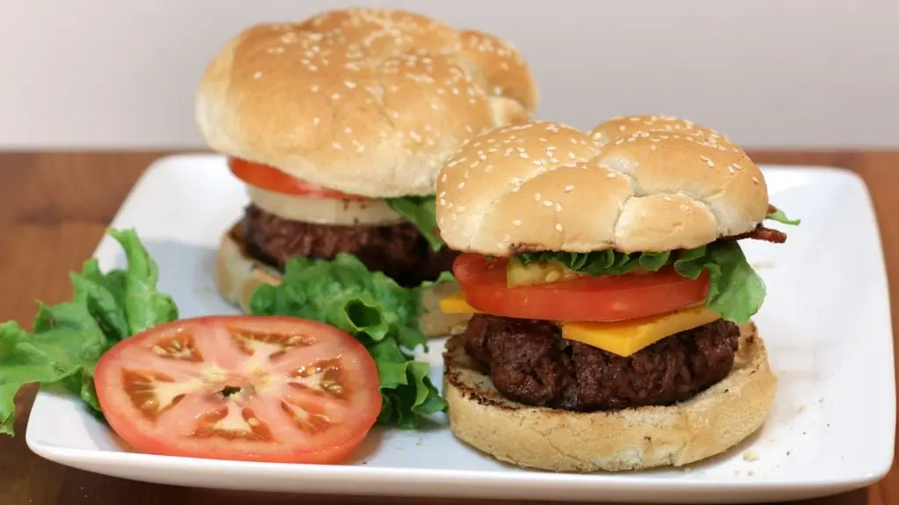

Cheeseburger

Description
The hamburger, a culinary masterpiece, stands as the undisputed champion of gastronomic delight. Its very essence encapsulates the perfect fusion of flavors and textures, orchestrating a symphony of taste that leaves one utterly captivated. Picture this: a succulent, juicy patty cooked to a precise medium-rare, adorned with a melty cascade of the finest aged cheddar, each bite an invitation to nirvana.
Nestled within a freshly baked brioche bun, soft yet sturdy enough to cradle this edible marvel, lies a harmonious medley of toppings. Crisp, verdant lettuce and slices of ripe, crimson tomatoes offer a refreshing contrast, a burst of nature's bounty in every mouthful. And oh, the caramelized onions, slowly sautéed to a sweet and savory perfection, adding an indulgent depth that lingers on the palate.
A clandestine symposium of condiments, each dollop and drizzle meticulously measured, transforms this already ethereal creation into a masterpiece. The velvety embrace of creamy aioli, the tangy kiss of house-made ketchup, and the zesty intrigue of spicy mustard intertwine like a dance of flavors, elevating the hamburger to a level of taste that defies earthly bounds.
This divine amalgamation of ingredients is not merely a meal; it is an experience, an emotion, a culinary marvel that beckons the senses. The act of sinking one's teeth into this ambrosial delight transcends mere sustenance, enveloping the eater in a euphoria that can only be attributed to the best food in the world – the unparalleled, extraordinary, and utterly mesmerizing hamburger.
Ingredients
- Buns
- Beef
- Lettuce
- Tomato
- Onion
- Ketchup
- Mustard
- Cheese
Steps
- Wash and Cut Lettuce, Tomato, and Onion
- Prepare Ground Beef into Patties
- Cook Patties in Preferred Cookware
- Add Cheese after Patty Flip
- Toast Buns in Same Pan
- Assemble Burger with Desired Toppings
Back to Main Page